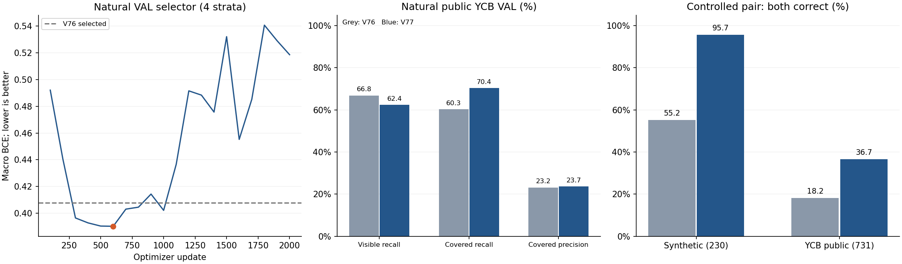

합성한 가림 변화에는 더 잘 반응합니다. 원래 공개 실사의 보이는 점 누락은 늘어, 아직 가림 판별을 해결한 결과로 채택하지 않습니다.
합성 1,003개와 YCB 공개 객체 4,200개의 기존 입력을 보존하고, 그중 고정 규칙으로 고른 4,799개에 가림 전후 쌍을 만들었습니다. query·참조점·crop 크기·8점 배치·기하 조건은 같고 RGB와 그 RGB에서 새로 추출한 동결 P3만 바뀝니다. 기존 41,237개 파라미터 구조와 V75 초기화를 유지해 학습 1회·2,000 update를 실행했습니다.
현재 평가 223장 접근·학습·문턱 선택·추가 추론은 이번 단계 모두 0회, PnP 0회입니다. 현재 자료는 직접 촬영했고 KU Leuven 자료와 무관하다는 사용자 확인을 기록했습니다. 아래 수치는 현재 팔레트 평가가 아닙니다.
V는 참조점 주변의 예상 대상 support가 남아 있는 상태, C는 예상 support가 가려진 상태, U는 판단 불명인 약한 교사입니다. 중심 픽셀 존재와 사람의 외부·자기 가림 D/E/S를 동일시하지 않습니다. target-only M0에 예상 support가 없으면 C로 바꾸지 않고 U로 남깁니다. 가상 cuboid 참조점을 물리 mesh 점으로 이동하지 않았습니다.
2,000 update 중 자연 VAL의 source×class 4개 집단 평균 BCE가 가장 낮은 600 update를 선택했습니다(0.39034; V76은 0.40797). controlled VAL과 현재 평가는 선택에 사용하지 않았고 문턱은 0.5입니다. 균등 가중 4집단 BCE 개선과 실제 비율로 계산한 공개 VAL 전체 BCE 악화는 함께 보고합니다.
| 자료·모델 | N | CM: 행/열 C,V | V precision | V recall | C precision | C recall | BCE |
|---|---|---|---|---|---|---|---|
| SYNTHETIC / V76 | 1625 | [[162, 11], [30, 1422]] | 99.2% | 97.9% | 84.4% | 93.6% | 0.0946 |
| SYNTHETIC / V77 | 1625 | [[169, 4], [48, 1404]] | 99.7% | 96.7% | 77.9% | 97.7% | 0.1134 |
| YCB_PUBLIC_REAL / V76 | 2018 | [[173, 114], [574, 1157]] | 91.0% | 66.8% | 23.2% | 60.3% | 0.6179 |
| YCB_PUBLIC_REAL / V77 | 2018 | [[202, 85], [651, 1080]] | 92.7% | 62.4% | 23.7% | 70.4% | 0.6799 |
공개 자연 VAL에서 C 정답은 173→202/287로 늘지만 V 정답은 1,157→1,080/1,731로 줄었습니다. C precision은 23.2%→23.7%에 머뭅니다. 전체 known query BCE는 0.61795→0.67994로 악화합니다. 4집단을 균등 가중한 checkpoint 지표가 좋아졌다는 이유로 실사 분류가 전반적으로 좋아졌다고 결론내릴 수 없습니다.
자연 VAL 전체 슬롯은 합성 1,880개(V/C 허용 1,625, U187), 공개 6,400개(V/C 허용 2,018, U4,299)입니다. 나머지 known 중 입력 무효·참조점 crop 이탈도 평가 loss에서 제외합니다. U 비율은 교사·입력의 평가 가능 범위이며 학습된 confidence 보류율이 아닙니다. binary head는 유효 입력에서 confidence 보류를 학습하지 않았습니다.
| 검증 자료 | 모델 | 가리기 전 V 정답 | 가린 후 C 정답 | 둘 다 정답 | 전 확률 > 후 확률 |
|---|---|---|---|---|---|
| SYNTHETIC | V76 | 223/230 | 134/230 | 127/230 (55.2%) | 227/230 |
| SYNTHETIC | V77 | 222/230 | 228/230 | 220/230 (95.7%) | 230/230 |
| YCB_PUBLIC_REAL | V76 | 467/731 | 298/731 | 133/731 (18.2%) | 424/731 |
| YCB_PUBLIC_REAL | V77 | 432/731 | 554/731 | 268/731 (36.7%) | 648/731 |
전체 4,799쌍의 지정 anchor는 같은 교사에서 before V→after C가 되었고, 독립 마스크 감사와 고정 RGB 재현 검사를 통과했습니다. TRAIN/VAL donor partition을 유지하고 같은 RGB 및 공개 target와 같은 객체 ID donor를 제외했습니다. 새로운 촬영 환경·새 객체 종류를 보장하는 분할은 아닙니다.
| 검증 자료 | 동일 after의 C anchor·V nonanchor 둘 다 정답 | 같은 after V recall | V→V: 맞음→틀림 / 틀림→맞음 |
|---|---|---|---|
| SYNTHETIC | 973/1066 (91.3%) | 92.2% | 48 / 1 (N=1066) |
| YCB_PUBLIC_REAL | 421/948 (44.4%) | 65.1% | 18 / 20 (N=948) |
공개 VAL의 같은 after 이미지에서 C anchor와 V nonanchor를 함께 맞힌 비율은 V76 258/948(27.2%)→V77 421/948(44.4%)입니다. 합성 물체가 보인다는 이유로 모든 query를 C로 만드는 극단적인 설명만으로는 결과를 설명할 수 없지만, 여전히 절반 이상을 함께 맞히지 못합니다. 합성 경계·donor 외형 단서와 query별 대상 식별의 영향을 분리한 증거도 아닙니다.
| 자료·모델 | N | CM: 행/열 C,V | V precision | V recall | C precision | C recall | BCE |
|---|---|---|---|---|---|---|---|
| SYNTHETIC / V76 | 1552 | [[338, 148], [45, 1021]] | 87.3% | 95.8% | 88.3% | 69.5% | 0.2953 |
| SYNTHETIC / V77 | 1552 | [[475, 11], [83, 983]] | 98.9% | 92.2% | 85.1% | 97.7% | 0.1614 |
| YCB_PUBLIC_REAL / V76 | 1927 | [[436, 543], [279, 669]] | 55.2% | 70.6% | 61.0% | 44.5% | 0.7651 |
| YCB_PUBLIC_REAL / V77 | 1927 | [[738, 241], [331, 617]] | 71.9% | 65.1% | 69.0% | 75.4% | 0.5750 |
가려진 anchor 외의 7개 점도 같은 교사로 다시 계산했습니다. 다른 점이 함께 가려졌으면 C, 남아 있으면 V, 모호하면 U로 남깁니다. after의 높은 C recall만으로 원래 실사나 사람 semantic 외부 가림으로의 전이를 입증할 수 없습니다.

동일 query 중심·크기의 before/after crop입니다. 공개 실사 위에 다른 공개 객체를 합성한 영상도 포함합니다. 성공 사례만 골라낸 그림이 아닙니다. 표시한 C/V는 source 약한 교사이며 사람 주석이 아닙니다.

동일한 공개 자연 VAL의 q-r≤3px·STRONG3×3 교사·중앙 셀(L∞≤1/18) 집단에서도 V76은 V459개 중 212개, V77은 217개를 놓칩니다. 148개는 두 모델에서 모두 누락됩니다. C76개 중 정답은 46→49개입니다. 큰 좌표 이탈·참조점 crop 이탈·footprint fallback만으로 남은 공개 실사 오류를 설명하기 어렵습니다. 고정 집단 저장 결과 검산
이번 결과는 동일 위치·기하 조건에서 RGB의 가림 변화에 반응하도록 학습할 수 있음을 보여줍니다. 학습 구성도 자연32·가린 후 비anchor32·전후 pair32로 바뀌었으므로 손실 구성과 데이터 증가를 분리한 순수 인과 실험은 아닙니다. 공개 자연 실사 분리와 보이는 점 보존이 약해 현재 평가로 새 후보를 선택하지 않습니다.
공개 query는 합성 TRAIN의 초기 좌표 오차를 적용한 source augmentation이며 실제 팔레트 초기 추론기의 출력이 아닙니다. 모든 source VAL은 반복 개발 자료입니다. 합성 VAL 235개 중 84개는 V75 선택에도 사용됐습니다. 사람 semantic D/E/S 성능, 보류 확률의 신뢰성, 새 촬영에 대한 일반화는 이번 결과로 보증하지 않습니다.
다음 후보는 공개 source에서만 검토합니다. 기존 특징의 표현 한계와 대상 소유권 문제를 구분하고, source에서 개선을 확인하기 전 현재 평가를 반복해서 열지 않습니다. 학습·가중치·선택 조건·부정 결과는 보존합니다.